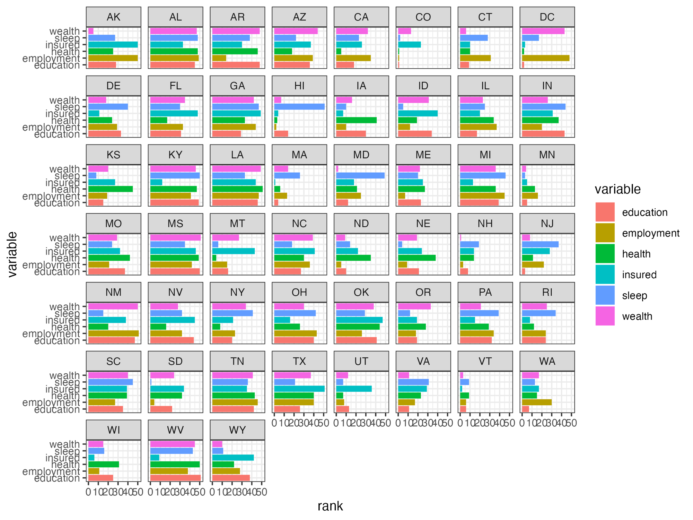
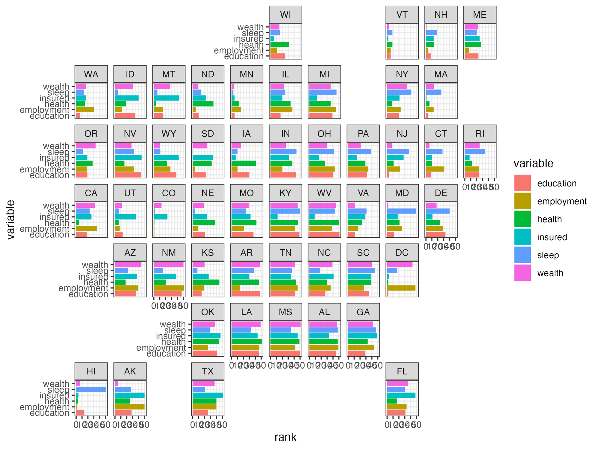
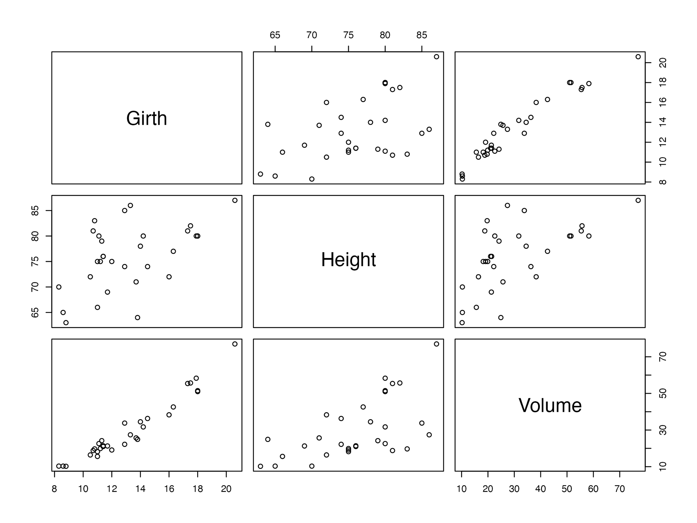

Capture plots from other devices with record_polaroid()
record_polaroid.Rmd{camcorder} overrides functions like
print.ggplot or print.patchwork to capture
plots. In some cases though, when other functions are used to print
plots, {camcorder} cannot automatically grab them.
record_polaroid() provides a way to expand the capturing
capabilities of {camcorder} to other devices.
This can be achieved by adding record_polaroid() after
the code used for plotting. Although record_polaroid() has
to be called manually, it allows saving a plot with the settings of an
existing {camcorder} setup, like width, height, or
directory.
This is particularly useful when you have an ongoing recording of ggplot2 code and then start using a package that has its own printing function, like geofacet.
Example with {geofacet}
In this example, we only use the state_ranks dataset
from geofacet but no functions from the package. Our
basic {camcorder} setup works as expected.
library(ggplot2)
library(geofacet)
library(camcorder)
gg_record(device = "png", width = 8, height = 6)
ggplot(state_ranks) +
geom_col(aes(variable, rank, fill = variable)) +
coord_flip() +
facet_wrap(vars(state)) +
theme_bw()
If we were to replace the facet_wrap() function with
facet_geo() though, no plot would be saved, since
geofacet uses its own printing function. This is where
record_polaroid() comes in. By adding it (no arguments
needed), {camcorder} saves the plot in the same directory
and with the same dimensions.
library(ggplot2)
library(geofacet)
library(camcorder)
gg_record(
dir = file.path(tempdir(), "recording"),
device = "png",
width = 8,
height = 6
)
ggplot(state_ranks) +
geom_col(aes(variable, rank, fill = variable)) +
coord_flip() +
facet_geo(vars(state)) +
theme_bw()
record_polaroid()
Example with base R
record_polaroid() can be used with base R plots as well.
Not only does it saves the plot but it also displays the image in
RStudio’s Viewer pane with the desired dimensions declared in
gg_record().
library(camcorder)
gg_record(
dir = file.path(tempdir(), "recording"),
device = "png",
width = 8,
height = 6
)
plot(trees)
record_polaroid()